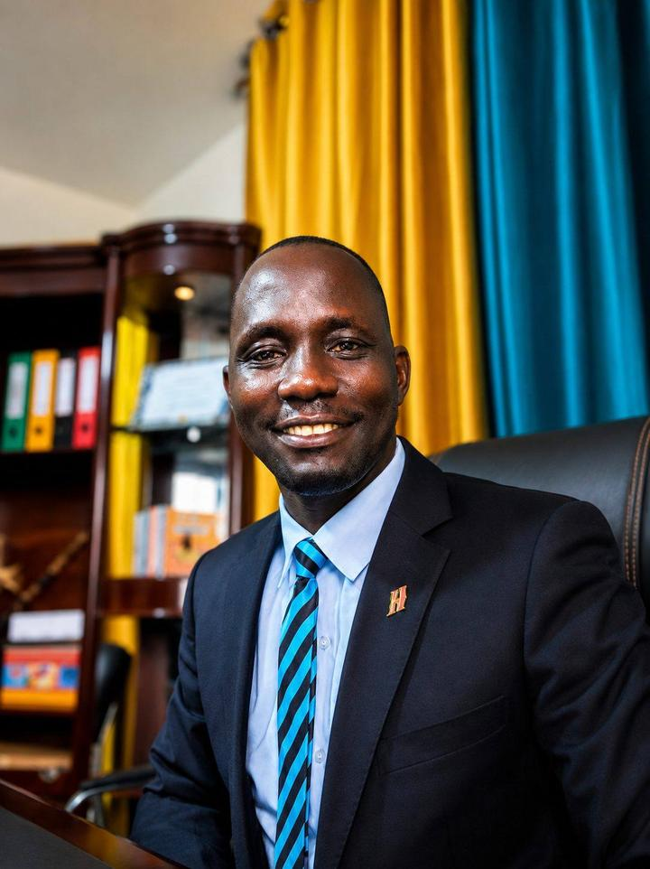

About the Camp
Prepare Him for the Man He Is Becoming
What if your son became more focused, responsible, disciplined, ambitious and knowledgeable, ready to gladly and ably fulfil what manhood will ask of him? Read the full story in about twenty minutes, or jump to the part that matters most to you.
About the Camp
What Parents Wish They Had Known While Growing Up, Which Their Sons Now Learn at the Camp
2 minute read
Many parents tell us the same thing. They wish someone had taught them these lessons earlier, and that is why they enrol their sons at the camp.
As an adult today, are there things you wish you had learnt when you were younger?
Think back to when you were growing up. Do you wish someone had taught you how to plan, save, avoid bad debt, tell a need from a want and make money grow? How to understand your emotions and keep your anger from costing you the people you love? How to discover your strengths and values, find your purpose and make wise decisions about your education, career and future?
Continue readingShow less
Perhaps you wish someone had taught you how to build healthy relationships and networks, choose your friends wisely, speak with clarity and confidence, start a business or prepare for life beyond formal employment. Maybe you wish you had learnt how to heal from difficult childhood experiences, look after your health, build a loving home and raise children well. Or how to build the influence you need to grow in your career, business and personal life.
Many of us learnt these lessons through experience. Some lessons came at a cost, and others came later than they should have. We rarely blame our parents or elders. We understand that many were busy surviving, working hard to provide food, school fees, shelter and other necessities. They did the best they could with what they knew and what they had. Unfortunately, sometimes, our best is still not enough for a world that asks more questions than we have answers for.
Money is a clear example. The FinScope 2023 survey found that only 14% of Ugandan adults save for emergencies, and only 39% save to meet their regular expenses. Saving is a habit, and habits are easiest to build while we are young.
Formal education matters and must be encouraged. But life also demands skills that are not always taught in the classroom or at home. Our sons need opportunities to learn these skills while they are still young, when there is time to practise, make better choices and build healthy habits. As they say, practice makes perfect. What is your son practising today?
Must your son have the same regrets tomorrow? We believe he need not. You care, and you know more now than many parents did when we were growing up. So, what are you giving your son today that will help him navigate the realities of life tomorrow?
This is where Boys to Men Mentorship Camp comes in. We work alongside parents to help prepare their sons for life, both now and in the years ahead.
About the Camp
Have You Prepared Your Son to Sustain What You Have Built?
1 minute read
Perhaps you had a good childhood, received a good education and have built a comfortable life for yourself and your family. You have worked hard to give your children opportunities you never had, and you want them to go further than you have.
That is a good thing. But have you considered whether your son knows how to sustain what you have built?
Continue readingShow less
A good start does not automatically prepare a child for adulthood. Your son may have access to excellent schools, material comfort and good opportunities, yet still need guidance in managing money, choosing friends, handling pressure, managing anger, building relationships, understanding his worth, avoiding harmful addictions and taking responsibility for his decisions.
What took one generation years of sacrifice to build can be lost by the next if the knowledge, values and habits behind that success are never passed on. If you were no longer around to guide him, would your son know how to sustain what you have built? Would he have the capacity to grow it, or might he unknowingly make choices that put it all at risk?
Whether your own journey has been difficult or comfortable, your son needs preparation for the life ahead of him. He needs to understand what he has been given, learn to use it wisely and develop the capacity to build something of his own.
About the Camp
Who Is Guiding Our Boys Today?
1 minute read
Not long ago, a boy in Uganda was raised by a whole village. Uncles, grandfathers, neighbours and elders corrected him, taught him and watched over him. Urbanisation, migration and the pressure to earn a living have thinned that circle. Many boys now grow up with parents who leave early and return late, and with no elder close by. What the community once did without being asked, parents must now do on purpose.
Continue readingShow less
Fatherhood is part of this picture. Ugandan family advocates estimate that about half of fathers play no part at all in the lives of their children. About one in ten has fathered a child without knowing it, and about four in ten know but have walked away. Most of the rest provide money but are not close to their children emotionally. These are estimates from interviews and not from a national count. The 2021 AfriChild report on Ugandan fathers also found that nearly one in five children live in homes without a father.
Boys face real risks while they wait for guidance. In April 2024, 95.3% of the people held in Ugandan prisons were male. A study of 2,500 boys and young men in Kampala found that 30.8% had already tried alcohol, and 10.5% had drunk in the previous month. The World Health Organization's 2023 figures show that Ugandan men drink about 20 litres of pure alcohol a year, against about 5 litres for women.
Betting has followed close behind. A 2022 study of university students found that almost three in ten had gambled, and men were more likely to do so than women. Young men rarely drift into trouble overnight. They drift when nobody is walking with them.
Sources. Uganda Prisons Service, Kampala alcohol study, WHO World Health Statistics 2023, Daily Monitor on fatherhood, AfriChild, The State of Uganda's Fathers, 2021.
About the Camp
What Kind of Man Do You Hope Your Son Will Become?
1 minute read
When we ask parents what they want for their sons, the answers may differ in wording, but the hopes are often similar. You probably want a boy who grows into a confident, disciplined and responsible man. Someone who knows who he is, understands where he is going and takes responsibility for his decisions.
You want him to work hard, become financially independent, treat people with respect and build healthy relationships. You want him to have the courage to stand for what is right, the humility to learn from others and the wisdom to seek help when he needs it.
Continue readingShow less
When he succeeds, you want that success to benefit more than himself. You want him to contribute to his family, community and country, and to leave the world a little better than he found it. You want him to work well with women as equal partners in building families, businesses, communities and nations.
These qualities develop over time. They require guidance, practice, good examples and opportunities to learn from others. Boys to Men Mentorship Camp exists to contribute to that preparation, working alongside parents to help boys grow into responsible men.
About the Camp
What Could Seven Days of Mentorship Mean for Your Son?
2 minute read
Imagine your son returning home with a clearer understanding of who he is, what he wants from life and the steps he needs to take. Picture him beginning to take greater responsibility for his choices, communicating more confidently and thinking differently about his future.
These are the changes we work towards during our seven-day residential camp.
Identity and purpose
He explores his strengths, values and interests and begins to understand the kind of person he wants to become. He develops a personal vision and identifies practical steps towards it.
Education and personal discipline
He reflects on why his education matters, how his daily habits affect his future and the influence his friends have on his decisions. He learns to make more deliberate choices rather than simply following the crowd.
Emotional maturity and confidence
He gets opportunities to express himself, ask questions and discuss issues that may be difficult to raise elsewhere. He practises managing his emotions, responding to pressure and speaking with courage.
Money and work
He begins to think beyond spending money to earning, saving and managing it responsibly. He is introduced to the importance of creating value, developing useful skills and exploring opportunities to build an income. The Uganda Bureau of Statistics reported in its 2021 labour force survey that 41% of youth aged 18 to 30 were not in education, employment or training, so this thinking cannot start too early.
Relationships and respect
He learns that strength includes self-control, responsibility and respect for others. This includes how he relates to girls and women, handles disagreements and uses his words and actions.
Brotherhood and belonging
He meets other boys and young men who are also learning what responsible manhood requires. Through shared activities and conversations, he experiences the value of friendship, accountability and encouraging one another to grow.
Family and legacy
He reflects on the sacrifices made for him, his responsibilities at home and the contribution he can make to his community and country. He begins to see that the opportunities he receives also come with responsibilities.
Every boy is different, and seven days cannot complete the work of raising a man. Our aim is to give him experiences, guidance and practical tools he can continue using long after he leaves the camp. We have four age groups, each with its own learning focus, so we encourage boys to return as they grow and become ready for the next stage.
We do not promise miracles. We promise to do our best to create a meaningful learning experience, and we expect each boy to come ready to learn.
On the closing Saturday, parents and guardians join us for a session on parenting in a changing world. The work continues at home, where parents remain central to their sons' growth.
Our Founder's Story
Why Did We Start Boys to Men? Our Founder's Story
3 minute read

For years, I wished I had one chance to ask my father some questions.As told by Banio Luiji Nobert
Read Banio's full storyShow less
I watched my family break when I was about four or five years old. My father and mother had a heated quarrel. My father struggled with alcohol, and my mother eventually left with us. By Primary Two, I had lost both parents. I lived in several homes until my mother's elder brother took me in and raised me with great care. When he died suddenly while I was in Senior Two, his wife kept me. She is the amazing woman I call Mum. This left a fatherhood gap that a few men, some from a distance, helped to fill.
For years, I wished I had one chance to ask my father some questions. What really happened? Why? I believe every child is born with potential for a bright future. We are not born with the destructive habits and behaviours that can later affect our lives and relationships. What happened to Dad? The truth is, I never found the answers, and I may never find them.
In Senior Three, something happened that helped shape my direction in life. A speaker visited us at St Peter's College and spoke about life, academics, choices and responsibility. I had just been elected Deputy Head Prefect. There was absolute silence as we listened. I remember wanting to be like him, to reach young people with a message of hope and inspiration.
It was the first time I had encountered someone of his kind. I realised there was a huge gap to be filled. The attention in that room showed me that young people are willing to learn and change. Sometimes, the right person is simply missing. I committed myself to making a difference, using my own experiences of struggle and hope, alongside the stories of others, to inspire young people. Initially, I did this on a small scale.
As I grew older, I also realised how much I had not been prepared for in life. In 2018, I spent seven months without a job while caring for my young family. I felt stuck and humiliated by life itself. There was so much about adulthood that nobody had taught me, and I began to appreciate the need to prepare young people for life's realities before they confronted them.
In 2022, this gave birth to our Life Readiness Programme. I decided that we would actively seek knowledge and develop a curriculum covering the essential life skills that many schools and families do not adequately address. We wanted to help people prepare for career growth, financial responsibility, relationships, personal development and life beyond formal employment.
Almost every adult who went through the programme expressed a similar thought: "If only I had learnt these things when I was younger." Many wished their children could learn them earlier.
Boys to Men Mentorship Camp grew out of these experiences and convictions. The speaker at St Peter's College showed me what mentorship could do. My childhood left me with questions about the difference guidance might have made in my father's life. My own experience of unemployment revealed the cost of entering adulthood unprepared, while our work with adults showed us how much people wished they had learnt earlier.
The camp brings this vision into a structured, practical experience for boys and young men. We want them to have access to the knowledge, guidance and mentorship that can help them understand themselves, make responsible decisions and approach adulthood with greater confidence.
Mentorship matters well beyond our own story. In its 2023 national survey in the United States, MENTOR found that 75% of adults who had a mentor while growing up said that relationship was a major contributor to their success.
About the Camp
What Does It Really Mean to Become a Man?
1 minute read
As boys grow up, society places expectations on them. Some are expressed openly; others are absorbed through what they observe at home, at school, among friends and in the wider community. Yet many boys are left to figure out what manhood means for themselves.
At Boys to Men, we use the 6Ps of Manhood to help boys reflect on six areas of responsibility.
Purpose
Knowing who you are, what matters to you and the direction you want your life to take.
Provide
Developing the capacity to earn, manage resources and contribute to the well-being of yourself and others.
Protect
Learning to safeguard yourself and others, creating safety rather than fear, and standing against harm.
Precede
Leading yourself first, taking responsibility for your choices and becoming capable of guiding others.
Profess
Using your words to communicate clearly, speak the truth, express yourself and build people up.
Procreate
Understanding relationships, family life, fatherhood and the responsibility of raising children with care and good character.
These are expectations we explore with boys in ways appropriate to their ages and stages of development. We want them to understand that becoming a man involves learning to take responsibility for themselves and recognising how their choices affect other people.
About the Camp
How Does the Boys to Men Mentorship Camp Work?
1 minute read
Boys to Men is a seven-day residential mentorship camp for boys and young men aged 8 to 23. Participants are grouped according to age, with facilitators who understand their different needs. A nine-year-old and a twenty-year-old may both need guidance, but they should not be expected to learn in the same way.
Our approach is practical and participatory. We have a pool of more than 20 mentors, giving boys opportunities to interact with different people and learn from their experiences. They participate in games with lessons, role-play real-life situations, listen to stories, engage in discussions, draw their visions for the future, ask questions about matters that concern them and learn practical skills.
Continue readingShow less
The camp creates room for boys to learn from one another as well as from their mentors. They are encouraged to think, speak, reflect and practise what they learn rather than simply listen to instructions.
We want each boy to leave with something he can carry into everyday life: a clearer sense of direction, a better understanding of his responsibilities and practical steps towards becoming the man he hopes to be.
About the Camp
What Happens When Your Son Returns Home?
1 minute read
On the closing Saturday, parents and guardians join us for a parenting session focused on raising children in a changing world. The boys also take part in a coronation ceremony, marking their journey through the camp and the responsibilities they are learning to embrace.
For parents, this is an opportunity to appreciate what their sons have experienced and reflect on how to support their continued growth at home. The camp is one part of a much longer journey, and the family remains central to that journey.
About the Camp
Could Boys to Men Be the Experience Your Son Needs?
1 minute read
Your son does not need to be struggling before he can benefit from mentorship. He may be doing well at school, behaving responsibly and enjoying a good relationship with his family. He may also be at a stage where he needs direction, confidence, better habits or someone outside his immediate family to help him see things differently.
Perhaps he is approaching adolescence, and you want him to be better prepared for the changes ahead. Perhaps he is already a teenager, and you are concerned about his friends, discipline, confidence or decisions. Or he is a young adult who needs to think more seriously about work, money, relationships and independence.
Continue readingShow less
Whatever stage he is at, the question is what he needs to learn next, and who will help him learn it.
We invite parents and guardians to explore Boys to Men Mentorship Camp and consider whether it is right for their sons. Our age-group approach helps us tailor the experience to the stage of life each boy is navigating.
We look forward to walking alongside you as your son grows into the man he is capable of becoming.
About the Camp
Preparing Our Boys for the Future
1 minute read
Every parent wants to see their son do well in life. We invest in his education, provide for his needs and try to give him opportunities to succeed. Preparing him for adulthood also means helping him understand himself, manage his emotions, make wise decisions, handle money, build healthy relationships and take responsibility for his future.
Continue readingShow less
At Boys to Men Mentorship Camp, we bring these lessons together in a practical, age-appropriate experience. We work alongside parents to help boys discover their potential, develop their capacity and learn how to use it in ways that benefit themselves and others.
Our story began with the recognition that many of us entered adulthood without the preparation we needed. A speaker at St Peter's College helped me see what mentorship could mean to a young person. My own experiences, and the lessons we learnt through our Life Readiness Programme, strengthened that conviction. Today, Boys to Men is one way we are putting it into practice.
We want the next generation of boys to have a better start.
About the Camp
Frequently Asked Questions
What is the Boys to Men Mentorship Camp?
Boys to Men Mentorship Camp is a seven-day residential programme that helps boys and young men develop life skills, confidence, discipline, purpose and an understanding of responsible manhood. Through mentorship, games, role-play, discussions and practical activities, participants explore the skills and attitudes they need as they grow towards adulthood.
What age can a boy join the camp?
The camp serves boys and young men aged 8 to 23. Participants are grouped by age so that the learning experience reflects their stage of development. The four groups are Young Explorers aged 8 to 10, Path Finders aged 11 to 13, Rising Men aged 14 to 17 and Young Men aged 18 to 23.
What will my son learn at the camp?
Your son will explore identity, purpose, goal-setting, discipline, emotional intelligence, communication, financial responsibility, healthy relationships and leadership. He will also reflect on his education, friendships, family responsibilities and contribution to society. The aim is for him to leave with practical lessons and a clearer direction for his life.
Is the camp only for boys who are struggling with behaviour?
No. Boys can benefit from mentorship at different stages of their lives. The camp is for parents who want to help their sons build on their strengths, develop good habits, make responsible choices and prepare for adulthood. A boy does not need to have a problem before he can benefit from additional guidance.
How can I register my son for Boys to Men Mentorship Camp?
Visit our intakes page to learn more about the programme and available intakes, or go straight to Apply. You can explore the information and identify the next suitable intake for your son.
Beyond the Week at the Camp
Support that continues once your son comes home
Boys to Men has run 8 intakes, drawing participants from 5 different countries. Here is how we stay connected to families long after the camp ends.
A Dedicated Parents Session
Every intake includes a session built specifically for parents, so you understand what your son is working through and how to support it at home.
A Parents' WhatsApp Community
A dedicated WhatsApp platform connects parents with each other and with the team, for questions, updates, and support between intakes.
A Learning Blog Built for Parents
Our blog answers the questions parents ask most, from screen time to confidence to why a son is pulling away. See Learning Resources or the full blog.
Not sure which path fits?
Every family's situation is different. If you are still deciding, reach out directly and we will guide you.
Talk to Us First